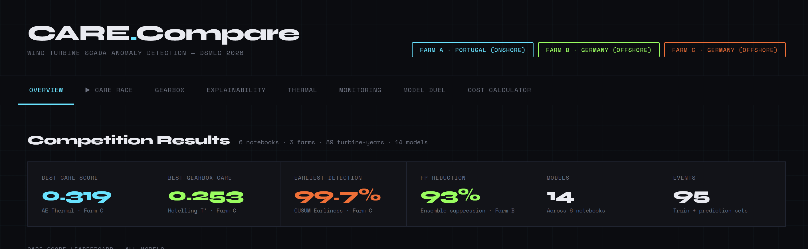

Data Science & Machine Learning
I work on data problems that have real-world consequences, from predictive maintenance to urban transit planning. Currently studying Data Science at the University of Calgary.
Selected Projects
Wind turbine failures are expensive and hard to predict. For the DSMLC Final Competition, our team built a fault detection system that runs entirely on existing SCADA sensor data, covering 36 turbines across 3 wind farms in Portugal and Germany.
We ran two detection approaches side by side. The first used XGBoost trained on labeled fault history, with per-turbine z-score features that consistently beat raw sensor readings. The second used an autoencoder trained only on healthy data, so it could flag anything it could not reconstruct and identify which sensor started drifting first. Both fed into a three-tier alert system (Watch, Alert, Action) with SHAP attribution that narrowed inspection scope by about 60%. The project was supported by Enbridge and Databricks.

Cochrane has one of the weakest transit systems in the Greater Calgary Area for its population size: 8 shuttle vehicles, 3 local routes running every 60 minutes, and no intercity service at all. Airdrie, with roughly twice the population, runs 26 vehicles with routes every 30 minutes. We used weekday mobility heat maps and pathing data from fall 2025 to understand how residents actually move through the town, then built our redesign around what we found.
The proposal covers 5 new fixed routes serving all major communities, with frequencies between 30 and 45 minutes. It also includes a new all-day route connecting downtown Cochrane to Crowfoot C-Train Station in Calgary, giving riders one-transfer access to UofC, SAIT, and downtown. The system is built to scale as Cochrane grows toward its projected 2050 population.
Using the Canada Small Business Financing Program dataset, which tracks loans and claims across all provinces going back to April 1999, we looked at whether small business lending patterns reflect broader economic health. Loan volumes dipped during the 2008 financial crisis and COVID-19 lockdowns, recovered afterward, and the average loan value has been climbing steeply enough to raise questions about growing debt loads across the sector.